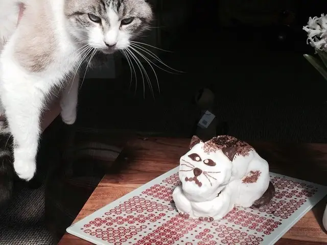
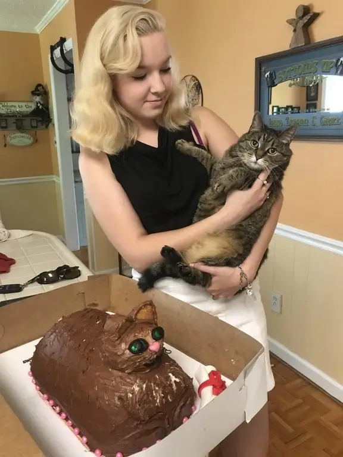
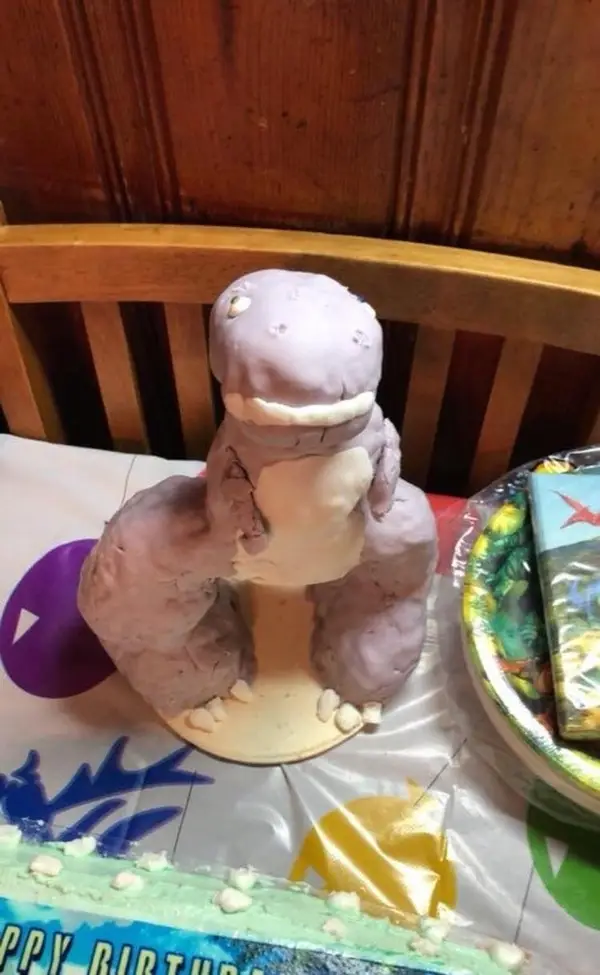
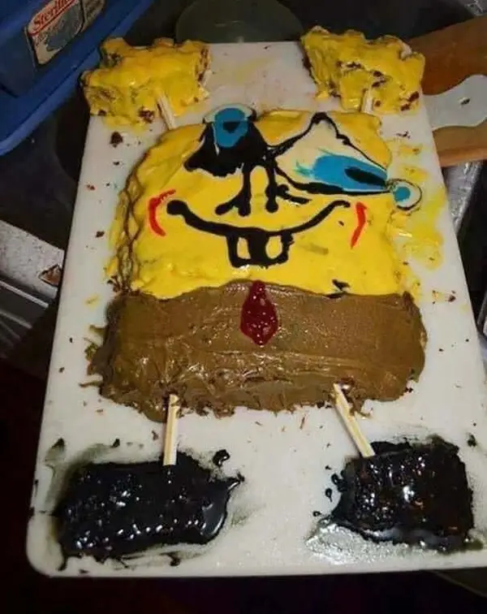
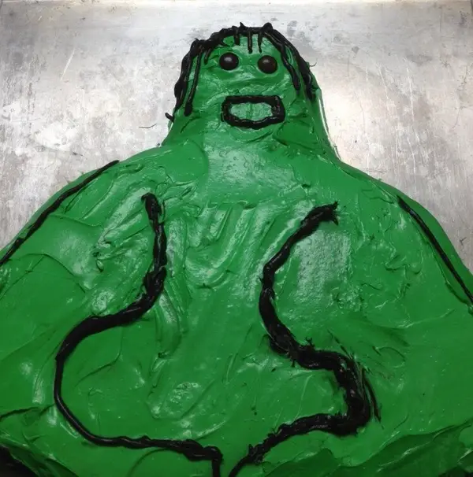

Failed Attempts At Making Cakes
"We asked for a duck"
chocolatefiend/ Reddit.com
"Cat cake"
Olibobs/ Reddit.com
"I wanted a cake that looked like my cat...it was a fail but it’s still pretty cute."
thehellsbelle/ Reddit.com
'A Land Before Time birthday cake....Caption this"
worlddddstarrrr/Reddit.com
"To make a spongebob cake"
"Asked my mom for a Hulk cake. Nailed it."